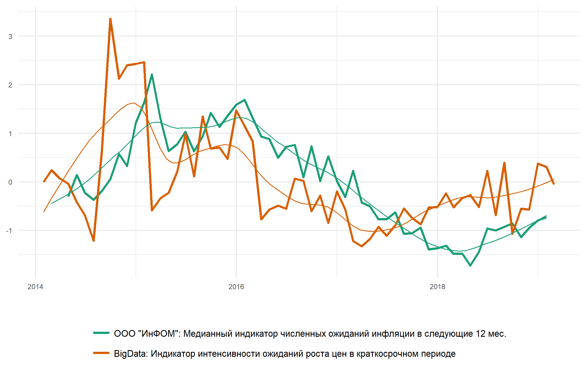
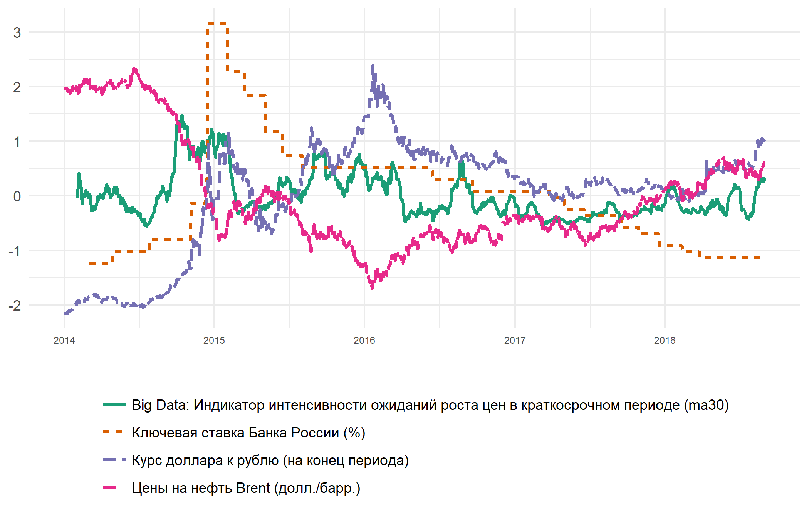

Big Data Indicators: ежемесячные отчеты о динамике индикаторов
Инфляционные ожидания населения
Март 2019 г.
Интенсивность инфляционных ожиданий
В марте 2019 г. инфляционные ожидания населения закрепили тренд к снижению, приблизившись к уровню октября 2017 г.. Неопределенность в прогнозе ожиданий со стороны населения также снизилась.
Продолжительный период повышенного уровня инфляционных ожиданий подошел к завершению. Последний наблюдался на фоне увеличения НДС (ожидания и фактическое повышение) и развивающегося тренда ускорению общей инфляции (с июля 2018 г.) – до 5.3% в марте г/г.
Интенсивность обсуждения ожиданий инфляции населением снизилась в большей степени в результате падения активности интернет-пользователей (число комментариев к статьям на тему “инфляции”) - при умеренном снижении активности медиа-ресурсов (число статей в экономических СМИ с упоминанием инфляционных ожиданий).
Note:
(1) Для удобства сопоставления индикаторы нормализованы: N(0, 1);
(2) Прочитать подробную информацию о big data индикаторе интенсивности инфляционных ожиданий и исследовать интерактивный график его динамики можно здесь.
Для медианного индикатора ФОМ инфляционных ожиданий российского населения в марте 2019 г. также наблюдалось снижение инфляционных ожиданий.
Факторы изменения интенсивности инфляционных ожиданий
Ежедневная динамика интенсивности ожиданий в марте была взаимосвязана с динамикой как цен на сырье, так и валютного курса, что подтверждается и результатами анализа содержания сообщений.
Note: Для удобства сопоставления индикаторы нормализованы: N(0, 1).
Сами интернет-пользователи в марте связывали сохраняющиеся ожидания повышения инфляции с состоянием внешней конъюнктуры (включая опасения введения новых санкций), динамикой валютного курса и с обеспокоенностью состоянием собственных доходов.
При этом структура big data индикатора инфляционных ожиданий вновь изменилась: в марте значительно возросла обеспокоенность населения ценами на недвижимость (11.8% всех сообщений с упоминанием ожиданий инфляции), превысив даже разговоры о повышении цен на бензин (10.6% сообщений). Обычно цены на недвижимость обсуждаются в 4-5% сообщений.
На уровне категории цен на бензин также оказалась обеспокоенность повышением тарифов и различных платежей (ЖКХ, проезд, др.), показав рост доли сообщений до 10.6% с обычного уровня в 6-7%.
Обсуждение продовольственных товаров - в связи с ожиданиями повышения цен - в марте вновь возросло, составив существенную долю сообщений (8.2%).
Снижению инфляционных ожиданий в марте 2019 г. способствовала, в основном, меньшая обеспокоенность динамикой цен на сырье - на фоне возобновления роста цен на нефть.
Note: Прочитать подробную информацию об анализе факторов изменения big data индикатора интенсивности инфляционных ожиданий и исследовать интерактивный график их динамики можно здесь.
Упоминания в комментариях отдельных сущностей за март 2019 г.

Note: Доля всех комментариев интернет-пользователей, упоминающих ожидания роста цен и каждую из указанных сущностей, в январе 2019 г.
Примеры комментариев: март 2019 г.
## Ага , опять каких то московских россиян опрашивали или питерских , где уровень жизни выше . Я через месяц в <...> захожу а там лук вместо 20? уже 30 ? , капуста 40? уже 70?. И везде не докладывают веса продуктов , тот же майонез 900млн на упаковке , а на деле 850 , типо цены не растут элизию создали
## 90% стоимости хлеба - мука. И она выросла в 1.5 раза. Минсельхоз - цена сильно не изменится. Всего в 1.5 раза. Видимо очередное повышение пошлин.
## просто неурожай и повышение цены зерна.
## Просто повышение цен.
## Как может сократится бедность? Ежедневно цены растут,а зарплаты теже.
## Это значит, что нам скажут, что теперь у всех только качественный бензин, а за качество надо платить. Ждём очередного повышения цен на топливо
## Ждем повышения цен, которые регулярно и делает, притом выше инфляции в 2,5раза
## Больше всех растет цена жизни!
## Если НДС повысили на 2%, соответственно цены на основные продукты должны вырасти на 20%!
## В итоге электричество, и так дорогое <...>, скакнет в цене еще большеФевраль 2019 г.
Интенсивность инфляционных ожиданий
В феврале 2019 г. инфляционные ожидания населения продолжили плавное снижение. Тем не менее, ожидания все ещё находятся на повышенном уровне.
Повышенный уровень инфляционных ожиданий наблюдается на фоне увеличения НДС (с 1 января 2019 г.) и развивающегося тренда ускорению общей инфляции (с июля 2018 г.) – до 5.2% в феврале г/г (по нашим оценкам на основе недельных данных Росстата).
Кроме того, повышенный уровень инфляционных ожиданий, по результатам Big Data Indicators, наблюдается на фоне роста индекса неопределенности ожиданий, отражающего неопределенность в прогнозе ожиданий со стороны населения.
Интенсивность обсуждения ожиданий инфляции населением снизилась в результате падения как активности медиа-ресурсов (число статей в экономических СМИ с упоминанием инфляционных ожиданий), так и интернет-пользователей (число комментариев к статьям на тему “инфляции”).
Note:
(1) Для удобства сопоставления индикаторы нормализованы: N(0, 1);
(2) Прочитать подробную информацию о big data индикаторе интенсивности инфляционных ожиданий и исследовать интерактивный график его динамики можно здесь.
Для медианного индикатора ФОМ инфляционных ожиданий российского населения в январе 2019 г. наблюдалось замедление роста ожиданий.

Факторы изменения интенсивности инфляционных ожиданий
Ежедневная динамика интенсивности ожиданий в январе была в большей степени взаимосвязана с динамикой цен на сырье.
Note: Для удобства сопоставления индикаторы нормализованы: N(0, 1).
При этом сами интернет-пользователи в феврале связывали сохраняющиеся ожидания повышения инфляции, в основном, с внутренними политическими процессами (включая рост налоговой нагрузки) и денежно-кредитной политикой.
По прежнему важным фактором повышенного уровня инфляционных ожиданий остается обеспокоенность состоянием собственных доходов. По оценкам Росстата, в 2019 г. сохраняется тренд к падению реальных располагаемых доходов населения (-1.3% в январе 2019 г.).
Структура big data индикатора инфляционных ожиданий вернулась к более привычной модели: обеспокоенность ценами на бензин в феврале снова вышла на первое место среди отслеживаемых категорий (17.1% против 15.1% в январе).
На втором месте оказалась обеспокоенность повышением налоговой нагрузки, показав рост доли сообщений, связывающих налоги и ожидания роста инфляции на 3.1 п.п. к январю (всего 9.6% сообщений в феврале). Эффект повышения НДС население в большей степени ощутило в феврале, нежели в первый месяц года. Однако обеспокоенность свершившимся ростом налоговой нагрузки не привела к дополнительному повышению инфляционных ожиданий населения.
Обсуждение продовольственных товаров в связи с ожиданиями роста цен существенно снизилось, однако осталось в числе значимых категорий. Доля сообщений с упоминанием отдельных продовольственных товаров в феврале составила 5.5% против 17.2% в январе.
Снижению инфляционных ожиданий в феврале 2019 г. способствовала, в основном, меньшая обеспокоенность внешнеэкономической ситуацией, а именно: состоянием мировой конъюнктуры (ожидания санкций, внешняя политика, и др.) и динамикой валютного курса. Кроме того, в феврале 2019 г. население не склонно было связывать инфляционные процессы и экономический кризис.

Note: Прочитать подробную информацию об анализе факторов изменения big data индикатора интенсивности инфляционных ожиданий и исследовать интерактивный график их динамики можно здесь.
Упоминания в комментариях отдельных сущностей за февраль 2019 г.
Note: Доля всех комментариев интернет-пользователей, упоминающих ожидания роста цен и каждую из указанных сущностей, в январе 2019 г.
Примеры комментариев: февраль 2019 г.
## другого и нечего ждать! Только рост цен! На всё!
## Зачем нам <...>? Когда происходит постоянный рост цен на бензин?
## Ставки понизят, а цены повысят и в итоге даже 25лет не хватит на погашение ??
## цены в любом случае вырастут
## у нас все проблемы решаются одним - повышением цен: упали цены на нефть, цены на бенз выросли, выросли цены на нефть, цены на бенз выросли, профицит топлива, негде хранить - цены снова выросли
## А мы и не настаиваем снижать цены! Зарплату вдвое повысь! Тогда и цены не будут проблемой
## Ждём очередного повышения цен на авиабилеты.
## Ждем повышения цен
## Зарплаты же растут, повышайте цены смело
## Запчасти,работа страховщиков стали дороже.НДС,налоги на прибыль,повысились зарплаты и отчисления налогов на зарплату сотрудников ,а это все ведет к росту цены продукта для конечного потребителя.
## главное будет рост цены. а почему много хлеба едим. МРОТ на другое не расчитанЯнварь 2019 г.
Интенсивность инфляционных ожиданий
В январе 2019 г. инфляционные ожидания населения остались на повышенном уровне. Однако тенденция к росту не была продолжена .
Повышенный уровень инфляционных ожиданий наблюдается на фоне увеличения НДС (с 1 января 2019 г.) и развивающегося тренда ускорению общей инфляции (с июля 2018 г.) – до 5.1% в январе г/г (по нашим оценкам на основе недельных данных Росстата).
Интенсивность обсуждения ожиданий инфляции населением осталась примерно на уровне декабря 2018 г. (число комментариев, упоминающих ожидания роста цен, на одну статью на тему инфляции), несмотря на продолжающееся снижение активности медиа-ресурсов (число статей в экономических СМИ с упоминанием инфляционных ожиданий).
Note:
(1) Для удобства сопоставления индикаторы нормализованы: N(0, 1);
(2) Прочитать подробную информацию о big data индикаторе интенсивности инфляционных ожиданий и исследовать интерактивный график его динамики можно здесь.
Медианный индикатор ФОМ для инфляционных ожиданий российского населения показывает аналогичную динамику.
Факторы изменения интенсивности инфляционных ожиданий
Ежедневная динамика интенсивности ожиданий в январе в большей степени была взаимосвязана с динамикой валютного курса.
Note: Для удобства сопоставления индикаторы нормализованы: N(0, 1).
При этом сами интернет-пользователи в январе связывали повышение собственных инфляционных ожиданий не только с состоянием валютного курса, но и с динамикой цен на отдельные продукты питания и товары, а также ростом обеспокоенности состоянием экономики (кризисные настроения). Подведение итогов прошедшего года не убедило россиян, интернет-пользователей, в перспективе возможного снижения инфляции.
Впервые с начала наблюдений за структурой big data индикатора инфляционных ожиданий, обсуждение продовольственных товаров в связи с ожиданиями роста цен оказалось наиболее значимой категорией среди отслеживаемых. Доля сообщений с упоминанием отдельных продовольственных товаров составила 17.2%.
При этом обсуждение цен на бензин, как правило являющееся лидирующей категорией в обсуждениях, в январе было отмечено в 15.1% сообщений, упоминающих ожидания роста цен.
Было также зафиксировано снижение интенсивности обсуждения налоговой нагрузки: до 6.5% от всех сообщений, упоминающих ожидания инфляции, против 8.6% в декабре 2018 г.
По прежнему важным фактором повышенного уровня инфляционных ожиданий остается обеспокоенность состоянием собственных доходов. Роль данного фактора при обсуждении ожиданий роста цен вновь перешла к росту к концу января. По первым оценкам Росстата, в 2018 г. продолжилось долговременное падение реальных располагаемых доходов населения (-0.2% в 2018 г.).
Note: Прочитать подробную информацию об анализе факторов изменения big data индикатора интенсивности инфляционных ожиданий и исследовать интерактивный график их динамики можно здесь.
Упоминания в комментариях отдельных сущностей за январь 2018 г.
Note: Доля всех комментариев интернет-пользователей, упоминающих ожидания роста цен и каждую из указанных сущностей, в январе 2019 г.
Примеры комментариев: январь 2019 г.
## <...> ждет повышения цен на бензин
## из-за повышения НДС цены выросли на ВСЁ!
## А как влияет на жизнь народа рост стоимости барреля? только бензин дорожает...и инфляцию раскручивает.
## Мм ,ну круто, теперь цены на топливо не изменятся,а может быть даже повысятся
## А цены всё выше.....
## всё делают, чтобы стимулировать рост цен!
## цены ещё вырастут и так будет каждый год
## говяжий язык октябрь 2017 450р/кг, говяжий язык октябрь 2018 600р/кг(лента), 4,3%? 43 если только, <...> рост цен минимум на 12-15 процентов, на отдельные товары до 50...
## Новинки: упаковка яйцо куринное - по 9 штук ( ранее 10 ), соки по 950 мл ( ранее по 1 литру ), пельмени по 450гр ( ранее по 0,5 кг), пиво по 1350 литра (ранее 1500 л) и так далее. Количество уменьшается, при всем том, что цены все равно умудряются повысится.
## так ходите в магазин и аптеки, будете знать рост цен. Например, два года назад фурацилин наш российский стоил 80 рублей, сейчас 210 рублей такая же упаковка <...>. И так все лекарства подорожали! Продукты аналогично. А, скоро и будет всю по млрд стоить
## а еще <пиво> теперь 0,45. Молоко - 0,9. Крупы, сахар - 0,9. Сосисоны - 8 штук. Кола - 0,9 Но это все просто совпадения и никак не связано с повышением цен
## даже согласно федеральным сми рост цен на продукты составит от 1 до 17 процентов без учета инфляции. и это за этот год. это очень много.
## молоко подорожало и со своими 10% ндс и вся молочка очень существенно. Кефир, творог, масло и т.п. да хоть 0% ндс, цена то растет ежемесячно
## Так же как и хлеб, цена растет, а вес все меньше.
## Стабильный рост цен, ещё и тарифы ЖКХ летом подорожают.
## Вырастут цены на всё, зарплаты останутся на том же уровне (но дополнительно обесценятся на уровень инфляции)Декабрь 2018 г.
Интенсивность инфляционных ожиданий
В декабре 2018 г. инфляционные ожидания населения значимо возросли.
В декабре интенсивность обсуждения инфляционных процессов вернулась к уровням июня, августа 2018 г. Повышение инфляционных ожиданий происходило на фоне приближения даты увеличения НДС и уверенного тренда ускорению общей инфляции, наблюдаемого с июля 2018 г., – до 4.3% в декабре г/г.
Рост индикатора инфляционных ожиданий в декабре был обусловлен увеличением числа комментариев интернет-пользователей, упоминающих ожидания роста цен – при некотором снижении медиа-активности (числа статей в экономических СМИ с упоминанием ожиданий инфляции).
Note:
(1) Для удобства сопоставления индикаторы нормализованы: N(0, 1);
(2) Прочитать подробную информацию о big data индикаторе интенсивности инфляционных ожиданий и исследовать интерактивный график его динамики можно здесь.
Факторы изменения интенсивности инфляционных ожиданий
Ежедневная динамика интенсивности ожиданий в ноябре в большей степени была взаимосвязана с ухудшением динамики цен на нефть.
Note: Для удобства сопоставления индикаторы нормализованы: N(0, 1).
При этом сами интернет-пользователи в декабре связывали повышение собственных инфляционных ожиданий в большей степени с внутренними политическими процессами и состоянием собственных доходов.
В категории “Внутренняя политика” одна из основных ролей принадлежала обсуждению повышения налоговой нагрузки. В ноябре обсуждение вопросов налоговой нагрузки в контексте ожиданий роста цен было зафиксировано в 8.6% всех сообщений, упоминающих ожидания инфляции.
В декабре Росстат пересмотрел данные о реальных располагаемых доходах населения. Обновленные данные Росстата показали отсутствие роста доходов в 2018 г.: -0.1% за 11 месяцев 2018 г. вкупе с сильным падением показателя в ноябре (-2.9% г/г). В течение всего 2018 г. динамика реальных располагаемых доходов населения оставалась волатильной, тренд к восстановлению не сформировался.
Вторичным, но существенным фактором, с которым население связало повышение собственных инфляционных ожиданий в декабре 2018 г. стала денежно-кредитная политика. С 17 декабря 2018 г. Банк России принял решение об очередном повышении ключевой ставки – с 7.5% до 7.75% годовых – что отразилось в обсуждениях инфляционных процессов со стороны интернет-пользователей.
Note: Прочитать подробную информацию об анализе факторов изменения big data индикатора интенсивности инфляционных ожиданий и исследовать интерактивный график их динамики можно здесь.
Упоминания в комментариях отдельных сущностей за декабрь 2018 г.
Note: Доля всех комментариев интернет-пользователей, упоминающих ожидания роста цен и каждую из указанных сущностей, в декабре 2018 г.
Примеры комментариев: декабрь 2018 г.
## Т.е. и цены вырастут и денег не будет...ну прикольно.
## Всё делается для того, чтобы повысить цены.
## Повышение НДС вызывает инфляционные ожидания и стимулирует рост цен. На рынке b2b уже уведомили о росте цен на 5%,аренду повысили на 5% и это без учёта роста НДС на 2%.
## Пока растут лишь издержки застройщиков, у них появляется больше проблем и головных болей. Это никак не снизит цену, а вот повысить может.
## В России всегда цены растут.
## Ну это логично же, НДС вверх и цены выше. Здесь можно не распределять категории товаров, достаточно одной новости, что цены вырастут на все...
## конечно повысятцся цены на услуги, раз расходы на оказание услуги(топливо) увеличатся
## На то и маневр, какая бы цена на бирже бы не была, цены все равно расти будут.
## Вырастет цена топлива. А значит вырастут цены на все и вся. А вот зарплата нет.
## Будет. Повышения НДС никто не отменял. А это в совокупности даст повышение цен на 10% на все.
## В среднем все подорожает на 5% от повышения ндс только, потоот повышения топлива еще 5% и падение цен на нефть, я думаю 20% инфляция будет
## ЦБ признал что в начале года будет рост инфляции двух значныеНоябрь 2018 г.
Интенсивность инфляционных ожиданий
В ноябре 2018 г. инфляционные ожидания населения остались на уровне октября 2018 г.
В целом, в последние три месяца наблюдаются признаки снижения инфляционных ожиданий относительно значений января-августа 2018 г. При этом с июля наблюдается переход общей инфляции к ускорению после длительного периода снижения (до 3.9% в ноябре г/г, по оценкам авторов).
В ноябре, наблюдалось небольшое снижение как статей в экономических СМИ, упоминающих ожидания роста цен, так и комментариев интернет-пользователей к ним.
Note:
(1) Для удобства сопоставления индикаторы нормализованы: N(0, 1);
(2) Прочитать подробную информацию о big data индикаторе интенсивности инфляционных ожиданий и исследовать интерактивный график его динамики можно здесь.
Факторы изменения интенсивности инфляционных ожиданий
Ежедневная динамика интенсивности ожиданий в ноябре в большей степени была взаимосвязана с динамикой курса доллара к рублю, без значимой реакции на наблюдаемое ухудшение динамики цен на нефть.
Note: Для удобства сопоставления индикаторы нормализованы: N(0, 1).
Эти же факторы оказались ключевыми для поддержания инфляционных ожиданий в ноябре на уровне октября: динамика валютного курса и цен на сырье, а также мировая конъюнктура.
Другим важным фактором, который интернет-пользователи в 2018 г. устойчиво упоминают в сообщениях, связанных с ростом цен, остается состояние собственных доходов. В ноябре этот фактор не стал ключевым для инфляционных ожиданий, но его роль осталась существенной.
По данным Росстата, в 2018 г. динамика реальных располагаемых доходы населения остается волатильной, формирования тренда к восстановлению не наблюдается. За 10 месяцев 2018 г. совокупный рост показателя составил всего 1% г/г.
Note: Прочитать подробную информацию об анализе факторов изменения big data индикатора интенсивности инфляционных ожиданий и исследовать интерактивный график их динамики можно здесь.
Судя по содержанию сообщений, для инфляционных ожиданий населения в ноябре немного возросла роль фактора будущего повышения НДС. В ноябре обсуждение вопросов налоговой нагрузки в контексте ожиданий роста цен было зафиксировано в 10.3% сообщений, упоминающих ожидания инфляции против 7%, наблюдаемых в сентябре и октябре.
При этом обсуждение вопросов, связанных с бензином и автомобилями по-прежнему отмечается в преобладающей доле сообщений – 30% в ноябре против 23% сообщений в октябре.
Упоминания в комментариях отдельных сущностей за ноябрь 2018 г.
Note: Указанные выше категории в ноябре 2018 г. наблюдались всего в 43% сообщений. Веса на графике рассчитаны в границах множества сообщений с упоминаниями категорий.
Примеры комментариев: ноябрь 2018 г.
## спонсор ежедневного настроения россиян Рост Цен! Рост Цен, выходи на сцену, скажи несколько слов! Спасибо! Прежде всего я хочу поблагодарить моих братьев, Ожидается Рост Цен и Возможен Рост Цен за многолетнюю поддержку, поверьте, жить и работать в России очень сложно, я встречаю постоянные нападки со стороны простого населения, но благодаря всесторонней поддержке <...> с большим оптимизмом смотрю на свои перспективы в РФ! Спасибо! Спасибо Рост Цен! А на сцену приглашается Вынужденное Подорожание и Прошу Меня Понять!....
## политика повышения цен на топливо выйдет боком
## Речь идёт о новом налоге, из-за которого повысится цена топлива
## после Нового Года новые "<...> санкции", рост цен на ЖКХ и топливо, новые налоги и прочие "прелести"
## будет повышение цены на топливо
## Так у нас при любом движении нефти цены растут)
## Ну ничего страшно, уменьшат выплаты, повысят цены, будут вместо колбасы россияне древесину кушать
## а у нас видимо еще все хорошо, цены приемлемые, стабильные, стабильно растут
## Плохая приметы ,явно цены на бензин вырастут
## зарплата падает. налоги растут как и цены
## Снизить цены? ну ну, посмотрим... (как они еще больше вырастут)
## У народа денег нету - куда дальше цены повышать?
## Начнется рост цен на жилье, и здравствуй пузырь на ипотечном рынке
## ну это путь к росту цены
## повысим цены на все в разы
## Значит ждём очередного повышения цен на бензин
## цены на все ,взлетят выше крыши
## Удивительно, экономика развивается, цены на всё растут, а зарплата нетОктябрь 2018 г.
Интенсивность инфляционных ожиданий
В октябре 2018 г. инфляционные ожидания населения немного возросли - до уровня ноября 2017 г.
В целом инфляционные ожидания остаются на повышенном уровне с середины 2017 г. В июле-октябре, по данным Росстата, наблюдается переход общей инфляции к ускорению после длительного периода снижения (до 3.5% в октябре г/г).
Усиление обеспокоенности населения отчасти является реакцией на увеличение освещения темы инфляционных ожиданий в экономических СМИ.
По результатам октября, наблюдался рост как статей экономических СМИ, упоминающих ожидания роста цен, так и комментариев интернет-пользователей к ним. Рост числа статей в октябре оказался небольшим – всего 4.7% м/м – по сравнению с резким увеличением инфляционных ожиданий в СМИ в 2 раза в сентябре м/м. При этом число комментариев возросло на 50% м/м после сокращения на 13% в сентябре м/м.
Note:
(1) Для удобства сопоставления индикаторы нормализованы: N(0, 1);
(2) Прочитать подробную информацию о big data индикаторе интенсивности инфляционных ожиданий и исследовать интерактивный график его динамики можно здесь.
Ежедневная динамика интенсивности ожиданий была взаимосвязана с динамикой цен на нефть.

Note: Для удобства сопоставления индикаторы нормализованы: N(0, 1).
Факторы изменения интенсивности инфляционных ожиданий
Ключевыми факторами повышения инфляционных ожиданий в октябре оказались: цены на сырье, мировая конъюнктура, обеспокоенность состоянием собственных доходов, а также неопределенность экономической динамики.
Так, по данным октября цены на бензин вновь возросли (на 0.4% к сентябрю), что стало одной из ключевых тем обсуждений у населения одновременно с упоминанием инфляционных ожиданий. При этом рост обеспокоенности состоянием мировой конъюнктуры может быть связан с предвыборной обстановкой в США и некоторым усилением санкционной риторики.
Важно отметить, что на протяжении всего 2018 г.население связывает повышенный уровень инфляционных ожиданий с обеспокоенностью состоянием собственных доходов. По данным Росстата, реальные располагаемые доходы населения в сентябре-октябре вновь вернулись к снижению (до -1.5% г/г в октябре).
Note: Прочитать подробную информацию об анализе факторов изменения big data индикатора интенсивности инфляционных ожиданий и исследовать интерактивный график их динамики можно здесь.
Судя по содержанию сообщений, фактор будущего повышения НДС по-прежнему не оказывает значительного воздействия на инфляционные ожидания населения. В октябре обсуждение вопросов налоговой нагрузки в контексте ожиданий роста цен – как и в сентябре – отмечалось всего в 7% сообщений, упоминающих ожидания инфляции.
При этом обсуждение вопросов, связанных с бензином и автомобилями, было отмечено в намного более существенной доле сообщений, упоминающих ожидания роста цен – 23%.
Упоминания в комментариях отдельных сущностей за октябрь 2018 г.

Note: Указанные выше категории в сентябре 2018 г. наблюдались всего в 41% сообщений. Веса на графике рассчитаны в границах множества сообщений с упоминаниями категорий.
Примеры комментариев: октябрь 2018 г.
## простите, а то что, сахар за октябрь взлетел на 44% а повышение цен на муку, хлеб???
## ага при плане инфляции 2-3% имеем инфляцию в 10%
## сейчас все разговоры только о росте цен на топливо...
## Статья должна называться так "рост цен на всё, замедлился, с января ожидаем полный <...>
## а ничего, что от повышения цен на бензин вырастут цены на всё?
## по твоему хорошо что цена на хлеб вырастет вслед за ценой на бенз?
## после таких заявлений обычно цены растут
## и цены поднимут, и налоги и пенсионный возраст еще немного до кучи
## И нефтяники с испугу еще выше поднимают цены
## бензин дает толчок росту цен
## учи матчасть. дорогой бензин= рост цен на продукты
## В России инфляция - странный предмет:\nЦены растут а инфляция нет!!!
## Требуем рост цен на алкоголь
## Зато условия для роста цен на бензин есть всегда!
## Налоги и цены растут, растут и растут.
## Опять рост цен
## Зп то выросла у меня,вот только инфляция [ест] этот рост вместе с ценами быстрее роста
## Две вещи растут- бензин и инфляция.
## Ждём мощного рывка вперёд, точнее рост цен на азс
## После нового года, нас ожидает повышение цен буквально на все товары, из за повышения НДС
## После НГ повысят цену
## По любому после нового года цены на всё вверх полетят.Сентябрь 2018 г.
Интенсивность инфляционных ожиданий
В сентябре 2018 г. инфляционные ожидания населения снизились, однако в целом остаются на повышенном уровне. Пока рано говорить о переломе тренда к росту ожиданий.
Ключевая причина снижения индикатора в сентябре состоит в резком росте числа новостных статей СМИ, упоминающих ожидания роста цен. При этом общее число комментариев (совокупная реакция интернет-пользователей на активность СМИ) осталась примерно на уровне августа.
Напомним, что повышенный уровень инфляционных ожиданий населения, в соответствии с big data индикатором наблюдается со второго полугодия 2017 г. При этом в 3 кв. 2018 г., по данным Росстата, был зафиксирован переход общей инфляции к ускорению после длительного периода снижения.

Note:
(1) Для удобства сопоставления индикаторы нормализованы: N(0, 1);
(2) Прочитать подробную информацию о big data индикаторе интенсивности инфляционных ожиданий и исследовать интерактивный график его динамики можно здесь.
Ежедневная динамика интенсивности ожиданий была взаимосвязана с динамикой курса рубля.

Note: Для удобства сопоставления индикаторы нормализованы: N(0, 1).
Факторы изменения интенсивности инфляционных ожиданий
Ключевыми факторами, сохраняющими инфляционные ожидания на повышенном уровне в течение сентября, оказались: динамика курса рубля и цены на сырье. При этом в контексте обсуждения инфляционных ожиданий отмечается некоторое снижение вклада факторов обеспокоенности состоянием мировой конъюнктуры, собственных доходов и неопределенности экономической динамики.

Note: Прочитать подробную информацию об анализе факторов изменения big data индикатора интенсивности инфляционных ожиданий и исследовать интерактивный график их динамики можно здесь.
Судя по содержанию сообщений, фактор будущего повышения НДС пока не оказал значительного воздействия на инфляционные ожидания населения. Обсуждение вопросов налоговой нагрузки в контексте ожиданий роста цен не является существенным - отмечалось всего в 7% сообщений, упоминающих ожидания инфляции, в сентябре.
Упоминания в комментариях отдельных сущностей за сентябрь 2018 г.

Note: Указанные выше категории в сентябре 2018 г. наблюдались всего в 27% сообщений. Веса на графике рассчитаны в границах множества сообщений с упоминаниями категорий.
Примеры комментариев: сентябрь 2018 г.
## Пора повышать цены на бензин
## самая радостная новость <...>, это рост цен за баррель
## Рост цен, рост цен, повышение налогов....
## просто скажите повышаются цены и все
## к людям ближе, наши цены еще выше
## процентов от 25 будет повышение цен на все!
## А при повышении доллара все дешевеет да? У нас по любому поводу дорожания валюты или наоборот - цены всегда растут
## Не нужно быть экспертом, чтоб предсказать повышение цен в России
## бензин, ЖКХ и прочие цены растут
## Ждемс повышения цен на топливо. И далее по списку... все тяготы лягут на конечного потребителя
## Значит цены вырастут
## Инфляция на самом деле и так давно уже выше 4%, а если учитывать то, как государство само повышает цены на свои услуги, то инфляция по этим параметрам даже 70-100%, как к примеру на выдачу загранпаспорта (цены повышались уже 2 раза).
## Толи еще будет, ждем повышения цен на бензин до 50 р
## уже пошли слухи что цена на бензин <...> опять повысится
## цены на бензин и солярку опять повысятсяАвгуст 2018 г.
Интенсивность инфляционных ожиданий
В августе 2018 г. инфляционные ожидания населения вновь возросли, продолжая повышение июня, произошедшее на фоне объявления о рассмотрении законопроектов о повышении НДС и о пенсионной реформе. Инфляционные ожидания интернет-пользователей по-прежнему значительно выше ожиданий от середины 2017 г.
Это соответствует общим ожиданиям повышения инфляции во втором полугодии 2018 г. со стороны Банка России и профессионального аналитического сообщества. Индикатор инфляционных ожиданий ФОМ, рассчитываемый на основе опросов, также сохраняет тренд к повышению, начавшийся в июне 2018 г.

Note:
(1) Для удобства сопоставления индикаторы нормализованы: N(0, 1);
(2) Прочитать подробную информацию о big data индикаторе интенсивности инфляционных ожиданий и исследовать интерактивный график его динамики можно здесь.
Ежедневная динамика интенсивности ожиданий также была значимо связана с динамикой курса рубля.

Note: Для удобства сопоставления индикаторы нормализованы: N(0, 1).
Факторы изменения интенсивности инфляционных ожиданий
Ключевыми факторами, с которыми население связало снижение собственных инфляционных ожиданий в течение августа, стали: обесценение курса доллара к рублю, в результате появления опасений новых санкций со стороны США и повышенной волатильности мировых финансовых рынков (Турция, Аргентина); мировая конъюнктура; обеспокоенность населения относительно состояния собственных доходов (также основной фактор роста ожиданий в июне); а также рост неопределенности в понимании будущей экономической динамики со стороны населения.
Note: Прочитать подробную информацию об анализе факторов изменения big data индикатора интенсивности инфляционных ожиданий и исследовать интерактивный график их динамики можно здесь.
Кроме того, в сообщениях, упоминающих ожидания роста цен, интернет-пользователи часто также упоминали цены на различные продукты питания (в основном, колбаса, рыба), а также цены на бензин.
Упоминания в комментариях отдельных сущностей за август 2018 г.

Неопределенность инфляционных ожиданий
В соответствии с данными big data indicators в августе 2018 г. было зафиксировано возобновление роста неопределенности инфляционных ожиданий. При этом аналогичный показатель, рассчитываемый ФОМ на основе опрососов населения, зафиксировал снижение относительно июля.

Note: Прочитать подробную информацию об индикаторе неопределенности инфляционных ожиданий и исследовать интерактивный график его динамики можно здесь.
Примеры комментариев: август 2018 г.
## к 100р за 1$ так же будешь говорить , что привыкнуть надо. А цены будут рости на всё- так же привыкнуть. Это уже деградация , привыкать к худшему.
## дак чем доллар дороже, тем зарплата ниже, так как рубль дешевеет а цены-то растут.
## Работаю в рыбном магазине . Цены как на дрожжах растут. На ценниках давно цена за 100гр., чтоб не шокировала.
## Конечно <...>. Экономика стабильности не предусматривает снижение цен, только рост, бессмысленный и беспощадный.
## Пффф, когда в этой стране что-то дешевело? По-моему таких прецедентов еще не случалось в новейшей истории. Так что при любых внешних и внутренних факторах цены будут только расти.
## У нас может только подорожать. Ведь её надо привезти с дальнего востока в европейскую часть, а гсм стал дороже и соответственно независимо от сложившейся себестоимости продукта цены будут непременно и стабильно расти.
## и все цены будут выше.А вот машин меньше точно не будет.
## НДС повышают на 2% , а они хотят на 10% поднять цены . <...> Куда смотрит антимонопольная служба ???? Поднимут цены на бензин и всё опять подорожает .
## Как всегда, цены только растут
## мяса в изделиях все меньше ,а цены все выше...
## Хороший замечаний. Видимо из-за того, что резко цены в России повысили.
## Я наверное чего-то не понимаю. Государство повышает налоги, чтобы наполнить бюджет, но тем самым изымает деньги из экономики. Очевидно, что сокращение денег в экономике приведёт к инфляции. <...>
## Не знаю,что там за инфляция в их 1%,или 3%.Цены как росли,так и продолжают рост.
## А ускорение инфляции за счёт поднятия НДС, роста стоимости топлива и услуг ЖКХ не допустили?
## если цены стабильно растут, то очередное повышение не является нарушением стабильности
## это вызовет шквальный рост цен на бензин, вот посмотрим... если его не отрегулировать в ручном режиме...
## Если бы только на колбасу, цена вырастет...
## не надо быть семи пядей во лбу, что бы понимать, что при повышении НДС на 2%, отпускные цены тоже поднимутся.Июль 2018 г.
Интенсивность инфляционных ожиданий
В июле 2018 г. инфляционные ожидания населения снизились – после скачка в июне на фоне объявления о рассмотрении законопроектов о повышении НДС и о пенсионной реформе. При этом, несмотря на снижение, инфляционные ожидания интернет-пользователей остаются повышенными относительно середины 2017 г.
Это соответствует общим ожиданиям повышения инфляции во втором полугодии 2018 г. со стороны Банка России и профессионального аналитического сообщества. Индикатор инфляционных ожиданий ФОМ, рассчитываемый на основе опросов, также снизился в июле по отношению к июню.
Ожидания интернет-аудитории относительно роста цен в ближайший год сблизились с ожиданиями, измеренными по общей выборке домохозяйств в регионах (по данным ФОМ), сократив значительный разрыв, наблюдаемый с середины 2017 г.
Note:
(1) Для удобства сопоставления индикаторы нормализованы: N(0, 1);
(2) Прочитать подробную информацию о big data индикаторе интенсивности инфляционных ожиданий и исследовать интерактивный график его динамики можно здесь.
Подневной индикатор интенсивности инфляционных ожиданий свидетельствует о постепенном снижении интенсивности инфляционных ожиданий в течение месяца - с небольшим усилением к концу июля (времени заседания Банка России о динамике ключевой ставки). Внутримесячная динамика интенсивности ожиданий также была значимо связана с динамикой курса рубля.

Note: Для удобства сопоставления индикаторы нормализованы: N(0, 1).
Факторы изменения интенсивности инфляционных ожиданий
Ключевыми факторами, с которыми население связало снижение собственных инфляционных ожиданий в течение июля, являлись снижение обеспокоенности относительно динамики курса рубля и роста сырьевых цен (способствующих росту цен на бензин).
Кроме того, перешла к снижению обеспокоенность относительно состояния собственных доходов населения, ставшая одним из главных факторов, с которым население связывало резкий рост интенсивности инфляционных ожиданий в июне.
В то же время, резко возросли опасения населения относительно экономического кризиса, с возможностью которого население также связывает собственные инфляционные ожидания.

Note: Прочитать подробную информацию об анализе факторов изменения big data индикатора интенсивности инфляционных ожиданий и исследовать интерактивный график их динамики можно здесь.
Результаты тематического моделирования
Результаты тематического моделирования и поиска сущностей за июль 2018 г. подтверждают высокую значимость факторов роста цен на бензин и ожидаемых изменений в налогообложении на сохранение повышенного уровня инфляционных ожиданий.
Topic modeling
Отдельные важные темы комментариев, упоминающих ожидания роста цен, за июль 2018 г.
Note: Общие результаты тематического моделирования - за каждый квартал с начала 2017 г. - доступны в разделе “Индикаторы”.
Triggers in july
Упоминания в комментариях отдельных сущностей за июль 2018 г.

Неопределенность инфляционных ожиданий
В соответствии с данными big data indicators в июле 2018 г. было зафиксировано небольшое снижение неопределенности инфляционных ожиданий. При этом аналогичный показатель, рассчитываемый ФОМ на основе опрососов населения, зафиксировал аналогичную динамику относительно июня.

Note: Прочитать подробную информацию об индикаторе неопределенности инфляционных ожиданий и исследовать интерактивный график его динамики можно здесь.
Примеры комментариев: июль 2018 г.
## Бензин плюс НДС, вот что подымет инфляцию, приведет к росту доходов 5-10% россиян и обнищанию 95-90%.
## это именно оно. Уже изучали этот вопрос. И выяснили, что где-то за полгода до повышения начинает разгоняться инфляция.
## Может рост бензина, цен на продукты , услуги ЖКХ причина роста инфляции, а не болельщики?
## Жить будем хуже, повышение НДС - вырастут цены на всё.
## все цены растут вместе с налогами <...> и пенсионным возрастом
## Потому-что неизбежное повышение цен тяжким бременем ляжет на плечи малообеспеченных граждан.
## А цена бензина в РФ всё равно вырастет
## Нефтяная страна повышает цены на бензин, в то время как страны не нефтянщики её снижают.
## Все страны мира подняли цены на бензин с повышением цен на нефть.
## однозначно, приведёт к росту цен... такая вот у нас конкуренция...
## рост цен на бензин, рост цен на билеты, рост цен на все
## цены повышаются из-за налогов
## и у нас тоже повышение цен будет
## Опять будет повышение цен на топливо
## цены все выше кофе все хуже выручки все меньше ....Апрель 2018 г.
Интенсивность инфляционных ожиданий
В апреле 2018 г. инфляционные ожидания населения ожидаемо возросли на фоне введения новых санкций со стороны США и соответствующего ослабления курса рубля. Инфляционные ожидания интернет-пользователей остаются повышенными относительно середины 2017 г.
Это соответствует общим ожиданиям повышения инфляции во втором полугодии 2018 г. со стороны Банка России и профессионального аналитического сообщества. Так, к примеру, big data индикатор инфляционных ожиданий возрос примерно на 33% (с 0.12 до 0.16), а индекс инфляционных ожиданий MMI в апреле вырос на 28%.
Плавный рост big data индикатора инфляционных ожиданий продолжился и в первую декаду мая.
Ожидания интернет-аудитории относительно роста цен в ближайший год остаются выше ожиданий, измеренных по общей выборке домохозяйств в регионах. В апреле 2018 г. индикатор медианных ожиданий роста цен, рассчитываемых ФОМ для Банка России на основе опросов населения, снизился до рекордных значений.

Note:
(1) Для удобства сопоставления индикаторы нормализованы: N(0, 1);
(2) Прочитать подробную информацию о big data индикаторе интенсивности инфляционных ожиданий и исследовать интерактивный график его динамики можно здесь.
Подневной индикатор интенсивности инфляционных ожиданий показал их резкий рост в течение месяца, начавшийся 9 апреля - момента вступления в силу нового пакета санкций США против России. Это событие также спровоцировало новый виток ослабления рубля, несмотря на продолжение устойчивого роста сырьевых цен.
При этом сохраняющийся рост цен на нефть, способствующий росту цен на бензин, является дополнительным фактором повышения инфляционных ожиданий - на фоне все еще слабой динамики реальных располагаемых доходов.
Note: Для удобства сопоставления индикаторы нормализованы: N(0, 1).
Факторы изменения интенсивности инфляционных ожиданий
Анализ факторов изменения интенсивности инфляционных ожиданий свидетельствует о том, что ключевыми факторами, с которыми население связывало рост собственных инфляционных ожиданий в течение апреля, являлись: ослабление курса рубля, рост сырьевых цен, способствующий росту цен на бензин, а также обеспокоенность неопределенностью экономической ситуации.
При этом обеспокоенность населения была сконцентрирована именно на динамике курса – доля упоминаний состояния мировой конъюнктуры (включая упоминания санкций и связанных с ними понятий) в сообщениях интернет-пользователей, содержащих упоминания ожиданий роста цен, в апреле снизилась.
Note: Прочитать подробную информацию об анализе факторов изменения big data индикатора интенсивности инфляционных ожиданий и исследовать интерактивный график их динамики можно здесь.
Результаты тематического моделирования
Результаты тематического моделирования подтверждают высокую значимость факторов роста цен на нефть и ослабления курса рубля для повышения инфляционных ожиданий.
Отдельные важные темы комментариев, упоминающих ожидания роста цен, за 2018 г.

Note: Общие результаты тематического моделирования - за каждый квартал с начала 2017 г. - доступны в разделе “Индикаторы”.
Неопределенность инфляционных ожиданий
В соответствии с данными big data indicators в апреле 2018 г. было зафиксировано небольшое повышение неопределенности инфляционных ожиданий. Это согласуется с небольшим повышением вклада фактора неопределенности экономической ситуации в динамику индикатора интенсивности инфляционных ожиданий. При этом аналогичный показатель, рассчитываемым ФОМ на основе опрососов населения, зафиксировал значительный рост неопределенности инфляционных ожиданий в марте 2018 г. - до уровней середины 2015 г.

Note: Прочитать подробную информацию об индикаторе неопределенности инфляционных ожиданий и исследовать интерактивный график его динамики можно здесь.
Примеры комментариев: апрель 2018 г.
## Сами нас готовят к повышению цен на топливо.
## <...> рост цен из за роста цены на нефть,а почему же когда цена на нефть падала,а цена бензина всё равно росла?
## Можно хоть завтра сделать всем зарплату по 100, 150 тыс. рублей – а цены вырастут, и ресурсный пай окажется у человека прежним.
## Повышение стоимости на бензин,повлияет на рос цен на продукты.Долго ли ещё <...>.
## Сами у себя покупаем, чтобы потом перепродать подороже !!!! Наживаемся на своём же народе!!! Опять грядёт повышение цен! И инфляция будет высоченная!!! Кого обманываем, - все всё понимают, - даже дети!!!!!!!!
## Не могу понять: цены на нефть растут - стоимость бензина растет; цены на нефть падают - надо поддержать отрасль - стоимость бензина растет.
## Цены на нефть падали бензин рос , цены на нефть растут бензин растет !!!
## значит на все будут цены расти (
## С начала мы радуемся как растет нефть, с возгласами «эх, заживем!!», потом с тихой грустью офигеваем как растет в цене топливо и из-за этого цены абсолютно на все!!!
## для того, чтобы понять почему не опускаются цены, нужно стать предпринимателем. Снижение цены есть, но оно постепенное, т.к. в цену товара при его закупке заложена цена на доллар, например, 65 руб, но при падении до хотя бы 60 руб, нужно реализовать предыдущий и если предприниматель не уйдет в убыток, постепенно цена снизится при последующих закупках. А где - то и нет, в случае, если высокий доллар сильно ударил по бюджету, тогда цену не опускают только для того, чтобы остаться на плаву и восполнить убытки. Ведь кроме этого нужно заплатить налоги и выдать людям зарплату.
## Да то что цены на [еду] вырастут ерунда , главное чтобы инфляция снижалась )))
## отличное "импортозамещение", вот только почему-то все "импортозамещенные" товары растут в цене так же, как и импортные при любых колебаниях курса ?
## Ну теперь любое повышение цен и налогов можно списать на влияние США
## раньше когда они продавали товары по завышенным ценам когда рубль отбил свои позиции опять, они оправдали завышенные цены тем, что они товар купили во время подорожания доллара и поэтому товар пока ещё дорогой, но прошло 4 года цена так же осталась, у нас никогда цены не снижаются
## какой это маразм, цены на продовольственнныые товары уже и так через чур высоки, с учетом реальных доходов населения, особенно в городах с небольшим колличеством населения
## цена на нефть падает-дорожает топливо, цена нефти растет-топливо все равно дорожает
## Ха-ха! А 76% [людей] думали что в сказку попали? Вот пусть в магазин придут и права покачают: мы же зарплату в рублях получаем, на каком основании цены повышаете, <...>???
## При понижении процентной ставки, отечественная валюта также подешевеет. А это в свою очередь приведёт к ещё большему росту инфляции.Март 2018 г.
Интенсивность инфляционных ожиданий
В марте 2018 г. обеспокоенность населения краткосрочной динамикой инфляции немного возросла относительно предшествующего месяца. Инфляционные ожидания интернет-пользователей остаются повышенными относительно середины 2017 г. Это соответствует общим ожиданиям повышения инфляции во втором полугодии 2018 г. со стороны Банка России и профессионального аналитического сообщества.
Ожидания интернет-аудитории относительно роста цен в ближайший год с середины 2017 г. остаются выше ожиданий, измеренных по общей выборке домохозяйств в регионах. В марте 2018 г. индикатор медианных ожиданий роста цен, рассчитываемых ФОМ для Банка России на основе опросов населения остался примерно на уровне февраля.
Note:
(1) Для удобства сопоставления индикаторы нормализованы: N(0, 1);
(2) Прочитать подробную информацию о big data индикаторе интенсивности инфляционных ожиданий и исследовать интерактивный график его динамики можно здесь.
Подневной индикатор интенсивности инфляционных ожиданий показал наиболее заметный рост в конце месяца, а именно, с 26 марта - момента вступления в силу нового решения ЦБ РФ о снижении ключевой ставки ЦБ РФ. Это уже второй последовательный эпизод коррекции инфляционных ожиданий вверх на фоне смягчения условий денежно-кредитной политики. Причем, если в феврале 2018 г. эта коррекция была незначительной, в марте 2018 г. она оказалась существенной, став одной из основных причин повышения индикатора по итогам всего месяца. В течение марта 2018 г. наблюдалось незначительное ослабление курса рубля, что также могло способствовать небольшому повышению инфляционных ожиданий.

Note: Для удобства сопоставления индикаторы нормализованы: N(0, 1).
Факторы изменения интенсивности инфляционных ожиданий
Анализ факторов изменения интенсивности инфляционных ожиданий подтверждают гипотезу о том, что денежно-кредитная политика оказала значимое влияние на рост инфляционных ожиданий населения в марте 2018 г. При этом другим важным фактором роста ожиданий стало повышение обеспокоенности населения неопределенностью экономической ситуации. Рост вклада этого фактора в общий рост ожиданий был также зафиксирован в последнюю декаду марта.
Note: Прочитать подробную информацию об анализе факторов изменения big data индикатора интенсивности инфляционных ожиданий и исследовать интерактивный график их динамики можно здесь.
Более детальный анализ содержания комментариев марта 2018 г. - с акцентом на выявление специфических факторов их изменений (выделение сущностей в текстовых сообщениях) - показывает, что важными факторами повышенного уровня инфляционных ожиданий остаются цены на бензин и опасения относительно повышения различных тарифов и платежей. Эти факторы часто обсуждаются интернет-пользователями при упоминании об ожиданиях роста цен.

Note: приведенные категории упоминаются примерно в 40% всех комментариев за февраль 2018 г.
Результаты тематического моделирования
Вместе с тем, результаты тематического моделирования свидетельствуют о том, что, помимо обеспокоенности ростом цен на топливо, в течение всего 1 кв. 2018 г. население продолжало проявлять значимую обеспокоенность состоянием собственных доходов, продолжая связывать их снижение с обеспокоенностью ростом цен.
Отдельные важные темы комментариев, упоминающих ожидания роста цен, за 1 кв. 2018 г.
<img src=“images/wntm_topics_hotest_quartal_without_long_comments_mar_2018.png” height=“150px” width=“200px”" />
Note: Общие результаты тематического моделирования - за каждый квартал с начала 2017 г. - доступны в разделе “Индикаторы”.
Неопределенность инфляционных ожиданий
В соответствии с данными big data indicators в марте 2018 г. было зафиксировано небольшое повышение неопределенности инфляционных ожиданий. Это согласуется с небольшим повышением вклада фактора неопределенности экономической ситуации в динамику индикатора интенсивности инфляционных ожиданий. При этом аналогичный показатель, рассчитываемым ФОМ на основе опрососов населения, зафиксировал значительный рост неопределенности инфляционных ожиданий в марте 2018 г. - до уровней середины 2015 г.
Note: Прочитать подробную информацию об индикаторе неопределенности инфляционных ожиданий и исследовать интерактивный график его динамики можно здесь.
Примеры комментариев: март 2018 г.
## Господа я сейчас плохую вещь скажу. Рост цен говорит о росте экономики так или иначе они будут расти на все товары. По этому не надо думать что цены на бензин будут падать. Они будут только расти. Смиритесь с этим.
## А цены на нефть резко подняли, спасая рубль, который стал выгодным средством спекуляции. Только за счёт спекулятивных сделок и держится. К экономике это имеет весьма условное отношение.
## С Киришского НПЗ ("СургутНефтеГаз") идёт качественное топливо(так как много идёт и на экспорт), а если говорить о качестве нефтепродуктов Роснефти на Дальнем Востоке (к примеру на Сахалине), то они не соответствуют европейским стандартам. Это легко ощутить хоть в Хабаровске, хоть в Комсомольске-на-Амуре, Южно-Сахалинске. И цены здесь намного выше, чем на Северо-Западе России.
## Государство забирает себе 70% от цены топлива, и постоянно поднимает эту долю, но сдерживает цены в рознице при том, что цены на всё, что нужно для производства постоянно растут. Долго это продолжаться не будет. Скорее всего после выборов взлетят цены на бензин, а нам из зомбоящиков будут рассказывать, что в Европе тоже такие цены, забывая при этом про европейские зарплаты.
## А на бензин будет ещё выше цена-я вам обещаю !
## Прям не знаю куда бы деть свои миллионы, слава богу хоть на топливо цена вырастет...
## рост цен говорит о запуске инфляции, в свою очередь удешевлении рубля, снижении доходов населения в качественном виде, вместе с тем, что сейчас уже и происходит, увеличение количества кредитов в банках, повышение закредитованности населения, ввиду всего перечисленного - бедность...
## в 17 г рост цен составил 7-8%, в 18 г прогнозируют тот же рост. Это оптимистично конечно. На несколько рублей вырастит цена это факт.
## Так выборы уже в прошлом. \nМожно ВСЕ повышать. Вплоть до цен на самые необходимые продукты питания, электроэнергию, газ, проезд на общественном транспорте, услуги связи, отопление, водоотведения, сборы, штрафы за неправильный переход дорог.
## <...> Зато совершенно точно вырастут налоги и поднимутся цены . <...>
## ценын растут не от роста экономики а из за дефецита гос бюджета,сама банковская система предпологает такое поведение иначе она сдохнет. Деньги делают дерьги а чтоб вы не разбогатели есть сдерживающий фактор инфляция
## Ну а почему бы нет, цены на всё растут расходы тоже увеличивается. По-моему всё нормально надо поднимать экономикуИндикатор кризисных настроений населения
Март 2019 г.
Интенсивность кризисных настроений
В марте 2019 г. индикатор кризисных настроений вновь вернулся к низким значениям. Сглаженный индикатор в марте остался на уровне предшествующих месяцев (0.24).
Возможность фундаментального ухудшения кризисных настроений населения не подтвердилась. Как и упоминалось в предшествующем отчете, динамика индикатора волатильна, следовательно, выводы об фундаментальных сдвигах в обеспокоенности населения кризисными процессами для данного индикатора можно делать только при его устойчивых изменениях.
В марте 2019 г. снижение индикатора было обусловлено падением активности интернет-пользователей - при стабильной медиа-активности.
Note:
(1) Для удобства сопоставления индикаторы нормализованы: N(0, 1);
(2) Прочитать подробную информацию о big data индикаторе кризисных настроений и исследовать интерактивный график его динамики можно здесь.
Факторы изменения интенсивности кризисных настроений
Основными факторами, способствующими снижению кризисных настроений в марте, стало падение обеспокоенности населения: динамикой валютного курса и внутренними политическими процессами. Таким образом, в марте динамику валютного курса население в большей степени связало с возможным повышением цен в будущем, нежели сс текущими или ближайшими кризисными процессами.
Note: Для удобства сопоставления индикаторы нормализованы: N(0, 1).
Note: Прочитать подробную информацию об анализе факторов изменения big data индикатора кризисных настроений и исследовать интерактивный график их динамики можно здесь.
Примеры комментариев: март 2019 г.
## Кризис набирает обороты. Низкая ставка банка может острочить усиление кризиса, но не более того.
## сюжет как <...> в 1998 году перед падением цен на нефть и очередным кризисом
## это также следствие демографического кризиса: просто нет людей, кому это все нужно, они не родились
## Убытки - понятие для бизнесмена нормальное... что все время нужно наживаться на народе, который оплачивает издержки в кризис?
## искусственный кризис можно постепенно создать за пару лет. Было бы желание.Февраль 2019 г.
Интенсивность кризисных настроений
В феврале 2019 г. резко возросла обеспокоенность населения кризисными процессами в экономике. Значение сглаженного индикатора в феврале 2019 г. оказалось на уровне сентября 2014 г.
Высокое значение индикатора в феврале, безусловно, является тревожным сигналом для экономики. Рост кризисных настроений в начале года согласуется с данными Росстата и ФОМ о значительном ухудшении потребительских ожиданий в конце 2018 г.-начале 2019 г.
При этом ближайшие месяцы покажут, происходит ли фундаментальное (устойчивое) ухудшение кризизисных настроений населения. Пока рост индикатора наблюдается всего два месяца подряд.
В пользу существенного изменения кризисных настроений также свидетельствует структура рассчитываемого индекса. В феврале и январе 2019 г. наблюдался значительный рост комментариев интернет-пользователей на тему кризисных процессов в экономике, несмотря на резкое падение медиа-активности (в результате: рост интенсивности обсуждения каждой отдельной статьи).
Note:
(1) Для удобства сопоставления индикаторы нормализованы: N(0, 1);
(2) Прочитать подробную информацию о big data индикаторе кризисных настроений и исследовать интерактивный график его динамики можно здесь.
Факторы изменения интенсивности кризисных настроений
Основными факторами, способствующими росту кризисных настроений в феврале, стала обеспокоенность населения: состоянием собственных доходов, а также динамикой цен на сырье и валютного курса.
Note: Для удобства сопоставления индикаторы нормализованы: N(0, 1).
Note: Прочитать подробную информацию об анализе факторов изменения big data индикатора кризисных настроений и исследовать интерактивный график их динамики можно здесь.
Примеры комментариев: февраль 2019 г.
## Где вариант, экономика свалится в новую затяжную рецессию?
## В условиях кризиса, налоги надо сокращать или убирать
## Кризис будет. Но совсем другого рода.
## конечно, кризис есть всегда - это всегда ещё и возможности и развитие. Но вот масштабный кризис, задевающий всех - явление цикличное. Например, кондратьевские циклы
## а он этот кризис вообще заканчивался что ли?
## чет мне кажется что сейчас тоже кризис. Просто другая его степень. Но все равно кризис. Иначе можно про ДТП в котором не сгорели все машины говорить что это не ДТП
## Когда нибудь , завтра или через год а может через лет цать но весь мир накроет такой кризис и крах экономический . А всё из за этого исторического максимума который будет лишь ставить максимумы
## Хмм! А ведь спад большой! Почему интересно?
## , всемирный кризис. То же что и у нас, то же что и везде
## страна в хронической рецессииЯнварь 2019 г.
Интенсивность кризисных настроений
В январе 2019 г. обеспокоенность населения кризисными процессами в экономике возросла. Значение индикатора в январе 2019 г. оказалось значимо выше декабря 2018 г. Однако пока рано говорить о серьезном изменении кризисных настроений – сглаженный индикатор кризисных настроений в январе 2019 г. остался на уровне предшествующего месяца.
В январе был наблюдался рост интенсивности обсуждения новостных статей на тему кризисных процессов в экономике, несмотря на снижение медиа-активности.
Note:
(1) Для удобства сопоставления индикаторы нормализованы: N(0, 1);
(2) Прочитать подробную информацию о big data индикаторе кризисных настроений и исследовать интерактивный график его динамики можно здесь.
Факторы изменения интенсивности кризисных настроений
Основными факторами, способствующими росту кризисных настроений в январе, стали мировая конъюнктура, внутренняя политика и растущая инфляция.
Note: Для удобства сопоставления индикаторы нормализованы: N(0, 1).
Note: Прочитать подробную информацию об анализе факторов изменения big data индикатора кризисных настроений и исследовать интерактивный график их динамики можно здесь.
Примеры комментариев: январь 2019 г.
## Прогноз один на 2019-новый глобальный кризис!
## Прикинь сколько кредитов набрали до следующего кризиса...
## Так и есть .. Следующая волна кризиса ,которой пугают уже несколько лет ,придёт оттуда ..
## может все таки не в кризисе дело, а экономической модели?
## какой там рост, рецессия полная
## А что уже кризис закончился? Если только в головах..
## С 2014-го года население нищает, какой выход из кризиса?Декабрь 2018 г.
Интенсивность кризисных настроений
Обеспокоенность населения кризисными процессами в экономике уже третий месяц подряд остается на пониженном уровне. Значение индикатора в ноябре и декабре 2018 г. примерно соответствовало уровню октября 2017 г.
В декабре отмечалось снижение как медиа-активности на тему кризисных процессов в экономике, так и интенсивности обсуждения соответствующих статей интернет-пользователями.
Note:
(1) Для удобства сопоставления индикаторы нормализованы: N(0, 1);
(2) Прочитать подробную информацию о big data индикаторе кризисных настроений и исследовать интерактивный график его динамики можно здесь.
Факторы изменения интенсивности кризисных настроений
Основными факторами, способствующими сохранению кризисных настроений в декабре, стали динамика валютного курса, растущая инфляция и неопределенность экономической ситуации.
Note: Для удобства сопоставления индикаторы нормализованы: N(0, 1).
Note: Прочитать подробную информацию об анализе факторов изменения big data индикатора кризисных настроений и исследовать интерактивный график их динамики можно здесь.
Примеры комментариев: декабрь 2018 г.
## Мир на пороге нового кризиса?
## ещё 4 года назад говорили что кризис через 2 года преодолеем ! Лож лож лож !
## , кризис, санкции США, обвал рубля, падение цен на нефть.
## а кто РФ выводит из кризиса?
## Эксперты прогнозируют мировой кризис к осени 2019.
## Парадокс капитализма, когда кризис и экономика на спаде, богатеют почему то <...>, а народ беднеетНоябрь 2018 г.
Интенсивность кризисных настроений
Обеспокоенность населения кризисными процессами в экономике в ноябре осталась на пониженном уровне относительно значений января-сентября 2018 г. Значение индикатора в ноябре 2018 г. примерно соответствует уровню октября предшествующего года.
При этом вновь наблюдалось разнонаправленное движение кризисных настроений населения и освещения темы кризиса в СМИ. Число комментариев интернет-пользователей в ноябре возросло, несмотря на снижение числа новостных статей СМИ по соответствующей тематике. Такая ситуация свидетельствует о том, что снижение кризисных настроений населения пока не является устойчивым.
Note:
(1) Для удобства сопоставления индикаторы нормализованы: N(0, 1);
(2) Прочитать подробную информацию о big data индикаторе кризисных настроений и исследовать интерактивный график его динамики можно здесь.
Факторы изменения интенсивности кризисных настроений
Основными факторами, способствующими сохранению кризисных настроений в ноябре стали динамика валютного курса и состояние мировой конъюнктуры. В ноябре опасения населения относительно усиления санкционной риторики оказались намного сильнее обеспокоенности резким падением цен на нефть.
Note: Для удобства сопоставления индикаторы нормализованы: N(0, 1).
Note: Прочитать подробную информацию об анализе факторов изменения big data индикатора кризисных настроений и исследовать интерактивный график их динамики можно здесь.
Примеры комментариев: ноябрь 2018 г.
## Сколько будет стоить коммерческая недвижимость, если покупательная способность только уменьшается, а фирм все меньше? Те ещё буквально один резкий экономический кризис и схлопнется огромное количество фирм и на их место никто не придёт. Но это только мое мнение
## которая обесценивается, а в кризис будет стоить копейки
## ещё ни одна экономика не начинала расти после повышения налогов в кризис
## они как и я не знали кризис и сейчас все хуже
## спасибо кризису
## Временный спад
## Я не понял а как же кризис . Или кризис только в России?
## Кризис грядет... популизм всегда предшествует кризисуОктябрь 2018 г.
Интенсивность кризисных настроений
Обеспокоенность населения кризисными процессами в экономике существенно снизилась. Однако пока рано говорить о появлении тренда к снижению – показатель кризисных настроений остается на значимо более высоком уровне относительно предшествующего года (0.25 против 0.19 по сглаженному ряду).
При этом наблюдалось разнонаправленное движение кризисных настроений населения и освещения темы кризиса в СМИ. Число комментариев интернет-пользователей в октябре снизилось, несмотря на резкий рост новостных статей СМИ на тему экономического кризиса в сентябре и его продолжение в октябре.
Note:
(1) Для удобства сопоставления индикаторы нормализованы: N(0, 1);
(2) Прочитать подробную информацию о big data индикаторе кризисных настроений и исследовать интерактивный график его динамики можно здесь.
Факторы изменения интенсивности кризисных настроений
Основными факторами, способствующими сохранению кризисных настроений в октябре стали цены на сырье и внешние риски.
Рост цен на бензин и мировая конъюнктура стали одними из ключевых факторов как для кризисных настроений, так и для инфляционных ожиданий.
Note: Прочитать подробную информацию об анализе факторов изменения big data индикатора кризисных настроений и исследовать интерактивный график их динамики можно здесь.
Примеры комментариев: октябрь 2018 г.
## И кризис кризисом не будет)
## А нашей стране выбраться из кризиса они не хотят помочь случайно?
## а России <...> не хочет помочь с кризисом справиться?
## От перестановки мест слагаемых значение суммы не меняется. Сырьевая модель экономики, приведшая к настоящему кризису не меняетсяСентябрь 2018 г.
Интенсивность кризисных настроений
Обеспокоенность населения кризисными процессами в экономике значительно возросла (до 0.31 по сглаженному ряду). Аналогичный уровень ожиданий наблюдался в феврале 2016 г. Год назад, в сентябре 2017 г. значение индикатора было существенно ниже (0.19 по сглаженному ряду).
Интересно, что как и в случае инфляционных ожиданий, наблюдалось резкое увеличение числа новостных статей СМИ - в данном случае на тему экономического кризиса. Однако рост обсуждений интернет-пользователями публикуемых статей и упомианния кризиса превысили повышение обеспокоенности СМИ.


Note:
(1) Для удобства сопоставления индикаторы нормализованы: N(0, 1);
(2) Прочитать подробную информацию о big data индикаторе кризисных настроений и исследовать интерактивный график его динамики можно здесь.
Повышение индикатора кризисных настроений в сентябре происходило на фоне повышения ключевой ставки Банком России и продолжения роста цен на нефть.

Note: Для удобства сопоставления индикаторы нормализованы: N(0, 1).
Факторы изменения интенсивности кризисных настроений
Основным фактором скачка кризисных настроений в сентябре стала обеспокоенность населения состоянием собственных доходов. Это соотносится с данными Росстата и ряда других источников о падении потребительских настроений в 3 кв. 2018 г.
В качестве второстепенного фактора роста кризисных настроений можно отметить цены на сырье. Так, по данным сентября цены на бензин снова немного возросли (на 0.1% к августу).

Note: Прочитать подробную информацию об анализе факторов изменения big data индикатора кризисных настроений и исследовать интерактивный график их динамики можно здесь.
Примеры комментариев: сентябрь 2018 г.
## циклы мирового порядка повторяются, просто вам об этом писать нельзя ил прото дилетанты. сейчас строколетний цикл глобального кризиса повторяется
## рф не имеет долларовых инвестиций в нужном размере, а рубль не разрешает мвф сделать инвестиционным. поэтому у нас кризис.
## у нас кризис
## от перестановки мест слагаемых значение суммы не меняется. сырьевая модель экономики, приведшая к настоящему кризису не меняется
## вот и весь кризис. это даже не 1%
## только и делаем, что переживаем кризисы
## экономику загоняют снова в кризисную стагнацию
## да при нефти 50$ и выше экономика должна развиваться. а у нас, как всегда кризис. не слишком ли много кризисов???? вы подсчитайте сколько за последние годы у нас кризисов
## Эм, нас готовят незаметно к новому кризису ?\nА то все чаще разговоры о нем
## То есть глобальный кризис ещё впереди? То есть это были только цветочки?)))
## Этой осенью начнется новый мощный мировой кризис, достанется абсолютно всем.
## думаю будет меньше,так как кризис в стране.
## В инете прочитала что сейчас налоговое время поэтому и спад, подъем будет потом.
## Я думал у нас уже бушует кризис всего , с 2014
## Россиянам не нужно готовиться к кризису - они уже привыкли жить в нём
## Откуда кризис, что цена на нефть упала?
## У нас кризис и не заканчивался никогда. Дна у него, похоже, просто нет
## Сейчас кризис.
## Не это ли верный признак скорого кризиса?Август 2018 г.
Интенсивность кризисных настроений
Обеспокоенность населения кризисными процессами в экономике осталась примерно на уровне июля (0.25 по сглаженному ряду). Значения индикатора в 2018 г. по-прежнему значительно превышают уровень соответствующего месяца предшествующего года (0.19 по сглаженному ряду).

Note:
(1) Для удобства сопоставления индикаторы нормализованы: N(0, 1);
(2) Прочитать подробную информацию о big data индикаторе кризисных настроений и исследовать интерактивный график его динамики можно здесь.
Повышение подневного индикатора кризисных настроений в августе, как и в июле, не оказалось значительно связанным с подневной динамикой курса и цен на нефть.
Note: Для удобства сопоставления индикаторы нормализованы: N(0, 1).
Факторы изменения интенсивности кризисных настроений
В августе ключевыми факторами, способствующими кризисным настроениям населения стали: обеспокоенность состоянием собственных доходов, мировая конъюнктура и повышение неопределенности экономической ситуации.

Note: Прочитать подробную информацию об анализе факторов изменения big data индикатора кризисных настроений и исследовать интерактивный график их динамики можно здесь.
Примеры комментариев: август 2018 г.
## О многих вещах вы не услышите <...>. По ним вы не услышите о миллионах россиян, живущих в нищете. Вам не расскажут о экономическом кризисе в РФ.
## Скорый кризис неизбежен в мировой экономике.
## так же начинался кризис 2008 ипотечного кредитования в Америке
## 2008 год,США.Ипотечный кризис
## и страна сразу в кризисе.
## Это не кризис - это <...>
## Странно!\nПочему экономика сопоставляется с природной стихией?\nЭкономический кризис - это разве стихийное бедствие, как землетрясение, а не творение рук ( умов) человеческих? И его нельзя предотвратить?Июль 2018 г.
Интенсивность кризисных настроений
Обеспокоенность населения кризисными процессами в экономике в июле снова возросла (с 0.26 до 0.28 по сглаженному ряду). Значения индикатора в 2018 г. по-прежнему значительно превышают уровень соответствующего месяца предшествующего года.

Note:
(1) Для удобства сопоставления индикаторы нормализованы: N(0, 1);
(2) Прочитать подробную информацию о big data индикаторе кризисных настроений и исследовать интерактивный график его динамики можно здесь.
Повышение подневного индикатора кризисных настроений в июле не оказалось значительно связанным с подневной динамикой курса и цен на нефть.

Note: Для удобства сопоставления индикаторы нормализованы: N(0, 1).
Факторы изменения интенсивности кризисных настроений
В июле ключевыми факторами усиления кризисных настроений населения стали рост обеспокоенности относительно внутренней политики и повышение неопределенности экономической ситуации. Таким образом, обеспокоенность населения инфляционными процессами, зафиксированная в июне на фоне объявлений о рассмотрении законопроектов о повышении НДС и пенсионного возраста, сменилась усилением кризисных настроений. При этом для населения также повысилась неопределенность в понимании будущей экономической динамики.

Note: Прочитать подробную информацию об анализе факторов изменения big data индикатора кризисных настроений и исследовать интерактивный график их динамики можно здесь.
Примеры комментариев: июль 2018 г.
## В несчастье по жизни и рецессии есть свои плюсы..
## отчасти соглашусь, но кредита и ипотеки без % не может быть, будет ибо каждый год новый кризис.
## мировой финансовый кризис прежде всего ударит по отсталым экономикам, особенно в нашем случае - возможное падение цен на ресурсы весьма печально будет для нас
## мои поздравления, отметьте 6 июля, как дату начала нового мирового кризиса
## кризис наступает
## кризис, санкции, и т.д.
## расскажи откуда у нас спад?
## ну вообще кризис затронул все страныАпрель 2018 г.
Интенсивность кризисных настроений
Обеспокоенность населения кризисными процессами в экономике в апреле немного снизилась (с 0.32 до 0.29). Однако текущие значения индикатора все еще значительно превышают уровень соответствующего месяца предшествующего года (примерно на 80%).

Note:
(1) Для удобства сопоставления индикаторы нормализованы: N(0, 1);
(2) Прочитать подробную информацию о big data индикаторе кризисных настроений и исследовать интерактивный график его динамики можно здесь.
Повышение подневного индикатора кризисных настроений, как и в случае индикатора инфляционных ожиданий, в большей степени было скоррелировано с динамикой курса рубля. Тем не менее, эффект ослабления курса на инфляционные ожидания оказался сильнее, чем на обеспокоенность динамикой инфляции.

Note: Для удобства сопоставления индикаторы нормализованы: N(0, 1).
Факторы изменения интенсивности кризисных настроений
В апреле 2018 г., последовательно, как и в марте, обеспокоенность возможностью экономического кризиса со стороны населения в большей степени была связана с состоянием мировой конъюнктуры. Однако если в марте движущей силой были опасения введения новых санкций, то в апреле - это была обеспокоенность возможным влиянием на российскую экономику уже введенного пакета санкций. Судя по снижению индикатора в апреле по отношению к марту, опасения населения относительно силы нового пакета санкций оправдались не полностью.
Note: Прочитать подробную информацию об анализе факторов изменения big data индикатора кризисных настроений и исследовать интерактивный график их динамики можно здесь.
Примеры комментариев: апрель 2018 г.
## я имел в виду, что да, сделали дешевле. В стране кризис, у людей итак денег нет, все на всем экономят, вот и приходится подстраиваться.
## на курсы посмотри! Или это явная победа над кризисом?
## готовтесь скоро будет кризис!
## как только она [цена на нефть] снизилась, и даже не достигла уровня 90-х, в стране сразу кризис и спад пости во всех сферах
## Это почему последние 5 лет экономический спад? Налоги низкие очень!
## А в общем, я вижу только общий экономический спад, семью бы прокормить, а правители вводят новые <...> налоги.
## Нам в России кризис нипочем,он у нас и не заканчивался??
## Он и не кончался чушь какая.за те года что я живу кризис постоянно
## У нас вобще спад экономики 3.6% нет никакого ростаМарт 2018 г.
Интенсивность кризисных настроений
Обеспокоенность населения кризисными процессами в экономике в марте значимо возросла – примерно до уровня середины 2016 г., в 2 раза превысив значение марта предшествующего года.
Note:
(1) Для удобства сопоставления индикаторы нормализованы: N(0, 1);
(2) Прочитать подробную информацию о big data индикаторе кризисных настроений и исследовать интерактивный график его динамики можно здесь.
Повышение подневного индикатора кризисных настроений происходило на фоне небольшого ослабления рубля в марте 2018 г.

Note: Для удобства сопоставления индикаторы нормализованы: N(0, 1).
Факторы изменения интенсивности кризисных настроений
В марте 2018 г. обеспокоенность возможностью экономического кризиса со стороны населения в большей степени была связана с состоянием мировой конъюнктуры (включая опасения введения новых санкций), а также со слабым повышением обеспокоенности населения инфляционными процессами в экономике.

Note: Прочитать подробную информацию об анализе факторов изменения big data индикатора кризисных настроений и исследовать интерактивный график их динамики можно здесь.
Примеры комментариев: март 2018 г.
## Может послужить толчком для мирового финансового кризиса.
## <...> привел страну к кризису
## как только она [цена на нефть] снизилась, и даже не достигла уровня 90-х, в стране сразу кризис и спад пости во всех сферах
## Это почему последние 5 лет экономический спад? Налоги низкие очень!
## Да, не посильным становиться сия ноша многим, налоги большие, материалы дорогие, бензин зашкаливает, да и альтернативы дачам в плане не дорогого отдыха хватает. А в общем, я вижу только общий экономический спад, семью бы прокормить <...>.
## не на много. и если учесть, что уже прошло почти 20 лет, то на мизер савсем. да и то это <...> заслуга высокой цены на нефть. как только она снизилась, и даже не достигла уровня 90-х, в стране сразу кризис и спад пости во всех сферах
## Пик нефтедобычи придётся на начало 20-х, а потом спад из-за истощения месторождений.
## Несмотря на продолжающийся пятый год спад реальных располагаемых доходов граждан, данные Росстата указывают на бурный рост трат и сокращение сбережений как в банках, так и наличных (см. график). Вот так. Спад реальных доходов, сокращение сбережений.